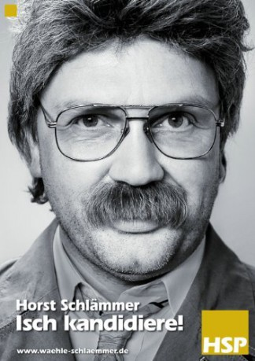

#9022 Horst Schlämmer - Isch kandidiere!
 
 IMDB-Wertung: 4.7 / 10
IMDB-Wertung: 4.7 / 10  Metascore: 0
Metascore: 0 
Horst Schlämmer, the deputy chief editor of the "Grevenbroicher Tagblatt", founds his own party to run in the 2009 German federal election.
Jahr: 2009
Dauer: 92 Minuten
FSK:
Land: Deutschland Studio: Constantin FilmTonspuren:
Untertitel:
Auflösung: 1080p (1920x1080) Größe: 9256 MB
Genre: Komödie
Regisseur: Angelo Colagrossi
Drehbuch: Angelo Colagrossi
Soundtrack: Achim Hagemann, Betti Hagemann
Darsteller:
- Alexandra Kamp als Alexandra Kamp
 Maren Kroymann als Renate Hammelböck
Maren Kroymann als Renate Hammelböck Thomas Loibl als Polizist Griebe
Thomas Loibl als Polizist Griebe- Guido Broscheit als Darsteller Filmset
 Michael Schumacher als Michael Schumacher
Michael Schumacher als Michael Schumacher- Bushido als Himself
- Kader Loth als Herself
 Iris Berben als Herself
Iris Berben als Herself Senta Berger als Herself
Senta Berger als Herself Michael Herbig als Himself
Michael Herbig als Himself Andrea Sawatzki als Herself
Andrea Sawatzki als Herself- Cem Özdemir als Himself
- Hape Kerkeling als Horst Schlämmer / Gisela / Uschi Blum / Angela Merkel / Ronald Pofalla / Ulla Schmidt
- Simon Gosejohann als Ulf 'Ulle' Polle
- Norbert Heisterkamp als Günni
- Soogi Kang als Mutter
- Tung Mingh Nguyen als Schlämmers Sohn
- Max Urlacher als Arzt
- Stefan Nagel als Chefredakteur
- Jacek Klimontko als Autohändler
- Henry Matz als Jury-Mitglied
- Erwin Bruhn als Lammert
- Jaro Omar als Casting Teilnehmer
- Erich Pries als Himself - Kaninchenzüchter
- Michael Hagen als Double Hape Kerkeling
- Theo Koll als Himself
- Ulrich Meyer als Himself
- Jürgen Domian als Himself
- Bettina Tietjen als Herself
- Cherno Jobatey als Himself
- Lilo Friedrich als Herself
- Bernhard Brink als Himself
- Jürgen Drews als Himself
- Claudia Effenberg als Herself
- Gunter Gabriel als Himself
- Sonja Kirchberger als Herself
- Frauke Ludowig als Herself
- Hilli Hotan als Herself
- Vanessa Ruprecht als Herself
- Andrea Lamár als Herself
- Bettina Schausten als Herself
- Normen Odenthal als Himself
- Jörg Woltmann als Himself
- Jürgen Rüttgers als Himself
- Claudia Roth als Herself
- Ursula Kwasny als Herself
- Otto Fricke als Himself
- Lale Akgün als Herself
- Gesine Lötzsch als Herself
- Gabriele Pauli als Herself
Datei: X:\2009(G-M)\Horst Schlämmer - Isch kandidiere! (2009, FSK, 1920x1080).mkv seit 24.05.2018
Festplatte: HD 2009(G-Z)-2010(A-F)
 Es gibt insgesamt 82 Filme in der Gruppe '2009(G-M)'
Es gibt insgesamt 82 Filme in der Gruppe '2009(G-M)'